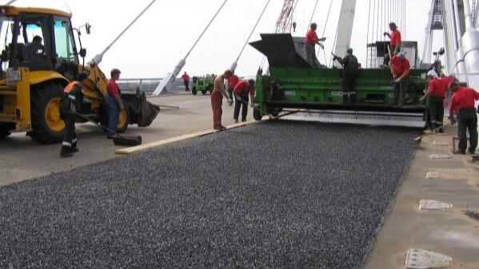

01 / МодификаторАДМ-2

Кадр из презентации АДМ.
АДМ
Модификатор асфальтобетона
Товарные формыАДМ-1АДМ-2
Материал композиционный, модифицирующий битум и асфальтобетонные смеси. Поставляется сухой гранулой и вводится прямо в смесь через линию подачи стабилизирующей добавки за 20-30 секунд. Модернизация оборудования асфальтобетонного завода не требуется.
Нормы расхода и хранение
Расход на приготовление ПБВ, % от массы вяжущего10-12
Расход в смесях типа А и Б, % от массы минеральной части0,3-0,6
Расход в смесях ЩМА со стабилизирующей добавкой, % от массы минеральной части0,6-0,9
Фасовка, биг-бэг800 кг
Обычный грузовой транспорт, разогрев перед вводом не нужен.
Температура храненияот -60 до +45 °C
Срок хранения гранулы1 год
Против 8 часов у готового ПБВ без перемешивания.
Даёт покрытию стойкость к колейности, сопротивление усталостному трещинообразованию и устойчивость к старению битума в жару.